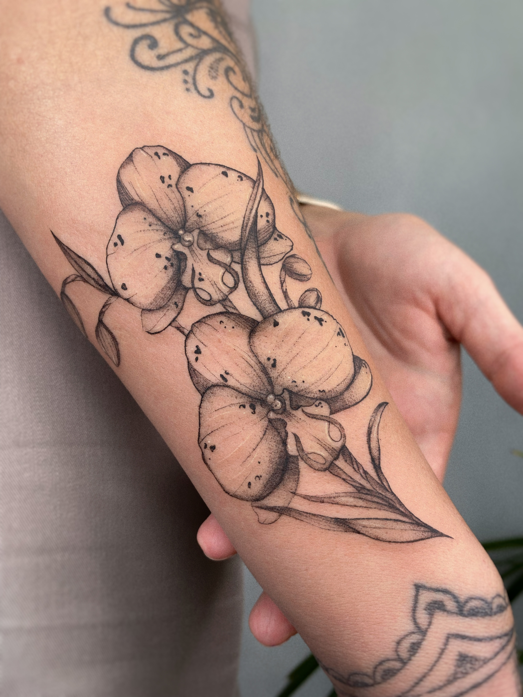
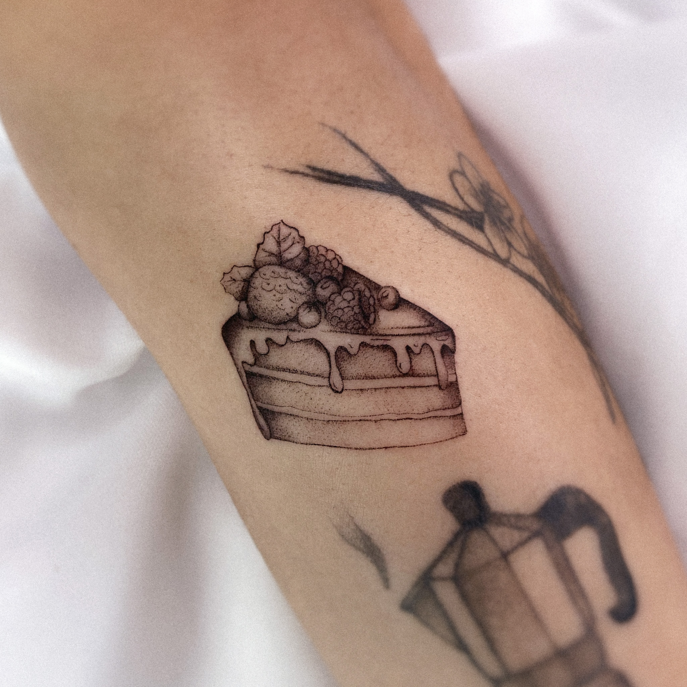
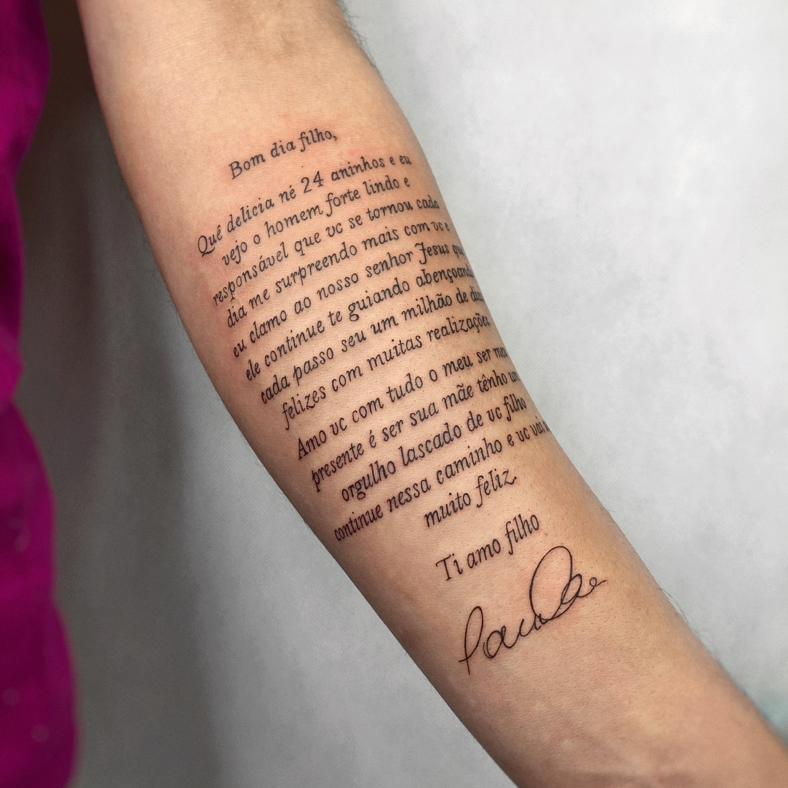
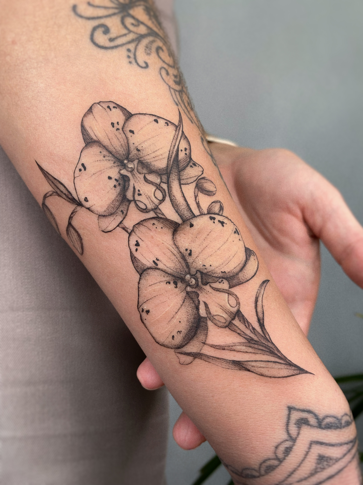
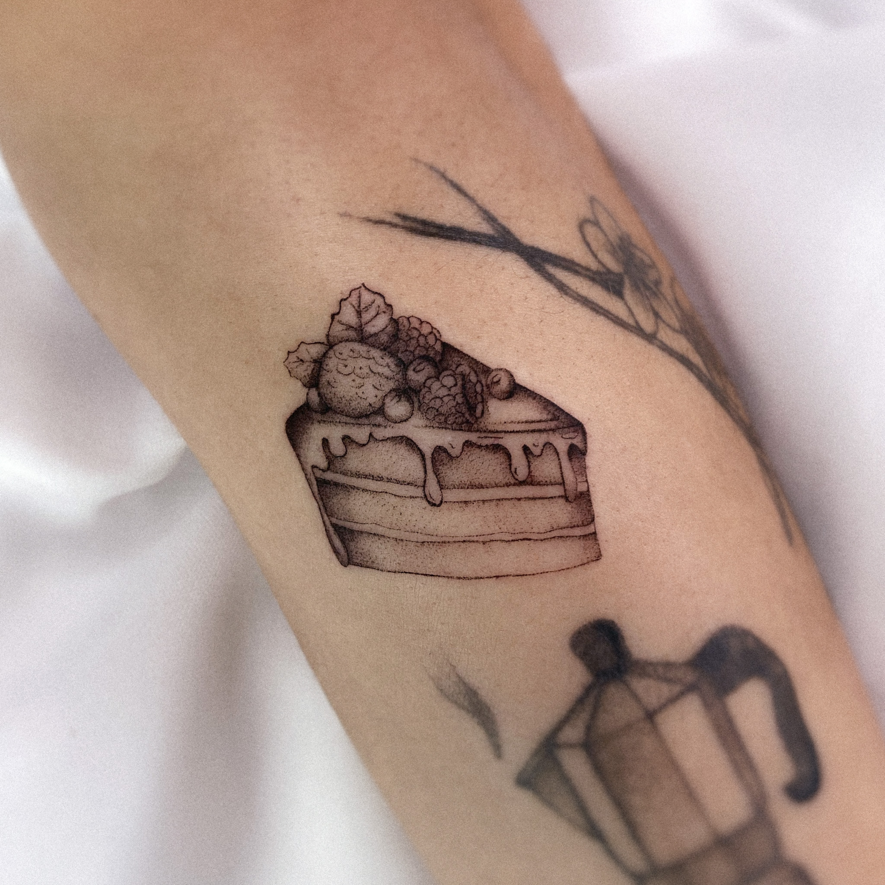
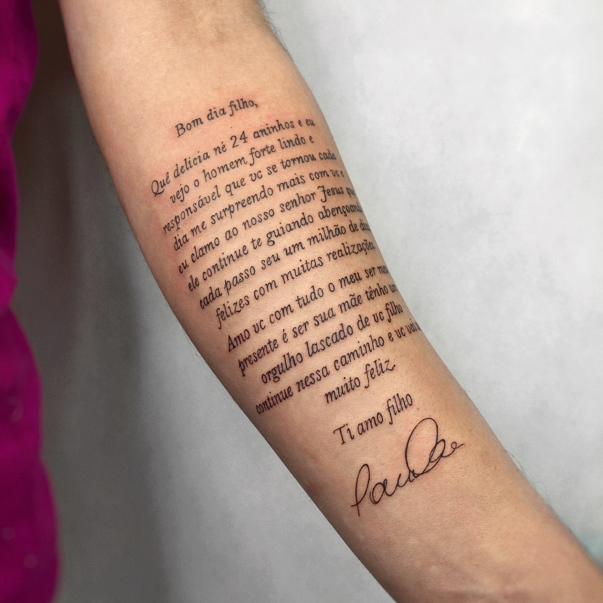

Traços que aumentam sua
Autoestima
Conheça alguns dos meus trabalhos:


Conheça alguns dos meus trabalhos:
Nasci e cresci em Florianópolis e sou de família manézinha. Desde pequena sempre me interessei por desenhar. Com o passar do tempo fui me apaixonando cada vez mais por arte. No final do ensino médio, com 18 anos, comecei a desenvolver desenhos autorais por encomendas, desde quadros até ideias para serem tatuadas. Foi então que pude perceber o quanto era incrível eternizar as artes nas pessoas.
Confesso que quando comecei, não foi nada fácil. É preciso acreditar muito em si, eu afirmava diariamente que tinha potencial para me tornar uma referência na tatuagem. Em um cantinho da minha casa, na garagem dos meus pais, foi onde pratiquei meus primeiros traços, e então, comecei minha trajetória passando minhas artes para a pele de amigos e famíliares. Sempre me cobrei muito e procurava melhorar a qualidade do meu trabalho cada vez mais, além de que sou extremamente perfeccionista, priorizando os mínimos detalhes, pois acredito que isso que faz a diferença.
Para mim nunca se tratou apenas de tatuar. A arte proporciona autoestima, identidade, transformação, superação, não só para as pessoas que eu tenho o prazer de tatuar, mas para mim também. Por meio da arte eu pude me reconectar com quem eu sou.
Graças à arte, junto com meu esforço diário, minha família e minha fé, venho colecionando muitas conquistas. Hoje, aos 20 anos, tenho minha independência, meu estilo próprio de tatuagem, e atuo no primeiro estúdio da Grande Florianópolis composto apenas por artistas mulheres.
Ass. JN
Os projetos são desenvolvidos de acordo com as ideias do cliente, sempre focando em manter a arte o mais próximo possível da essência proposta. Portanto, na hora de solicitar seu orçamento, toda informação será bem vinda.
Uma vez que eu tenha entendido sua ideia, seu projeto começa a ser desenvolvido.
É necessário um tempo para que o processo criativo da sua tatuagem seja concluído e finalmente apresentado para sua aprovação. No dia da sessão analisamos juntos o local, tamanho e os detalhes finais da arte.
Trabalho com a técnica do traço fino, conhecido também como FineLine. Minha proposta principal é trazer uma arte leve e delicada, rica em detalhes.
Em meus projetos, busco sempre trazer uma ideia diferente, mesclando os elementos e as referências trazidas pelo cliente. Procuro manter a essência da ideia, e entregar uma arte autêntica e cheia de personalidade.
Esses são alguns dos meus trabalhos:
Botânica | Florais | Escritas | Insetos | Borboletas | Minimalistas
.JPG) 





Nosso estúdio fica localizado no bairro Kobrasol em São José, na cobertura do Hotel Diaudi.
Os orçamentos são realizados na plataforma do whatsapp, e serão respondidos por ordem de chegada. De segunda a sexta das 9h ás 17h.
(48) 99667-3341
Horário de Atendimento
Terça á Sábado, das 9:30h ás 21h